Bobo, 40 ans, marié, 5 enfants fait vivre sa famille en promenant les touristes à Bagan à la découverte des nombreux temples souvent accessibles uniquement via des chemins en carrioles. Il connait cette terre comme sa poche et sait où aller pour voir les plus beaux couchés de soleil du haut d’un des nombreux édifices de la région, les plus belles peintures conservées dans leur jus ou encore comment éviter la foule qui se presse chaque année toujours plus nombreuse pour visiter ce site exceptionnel. Bobo est le horsecart driver numéro 20 à Bagan et probablement un des meilleurs conducteur de carriole de la ville. Vous pourrez presque tout lui demander, sauf une seule chose qu’il refusera systématiquement. A savoir de vous accompagner en haut des temples. Bobo est un horsecart driver et préfère rester dans le monde des horsecart drivers, en bas des temples.
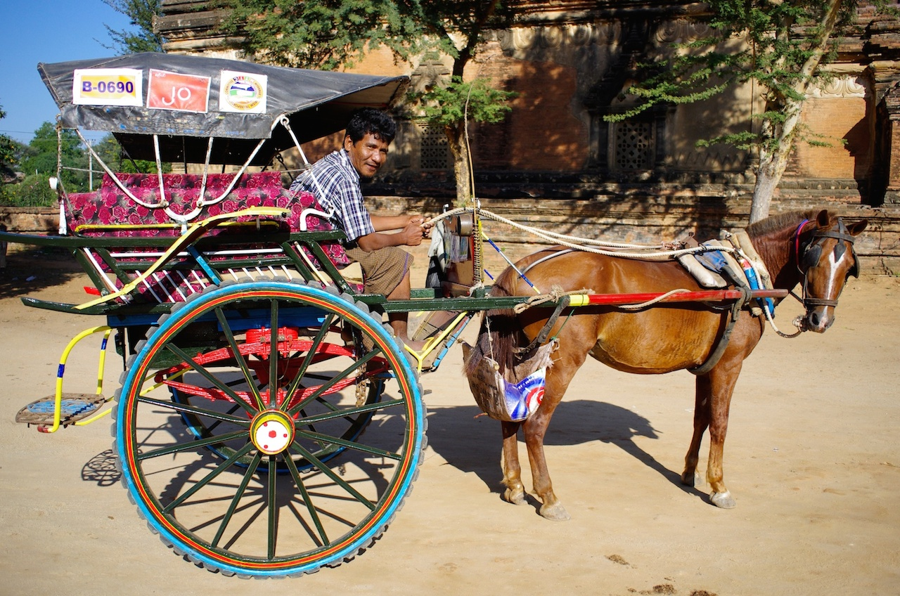
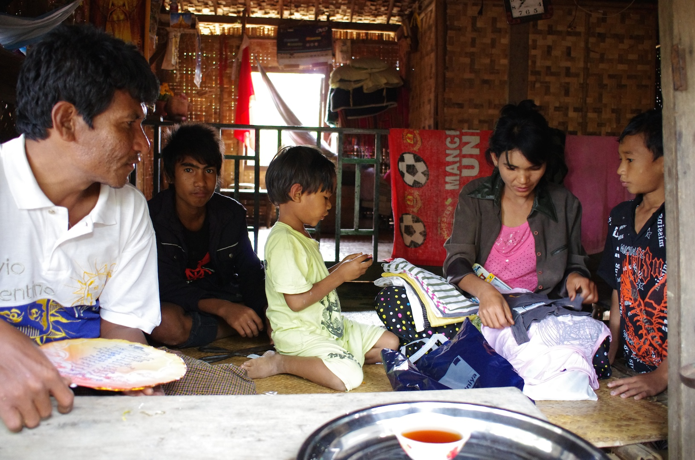
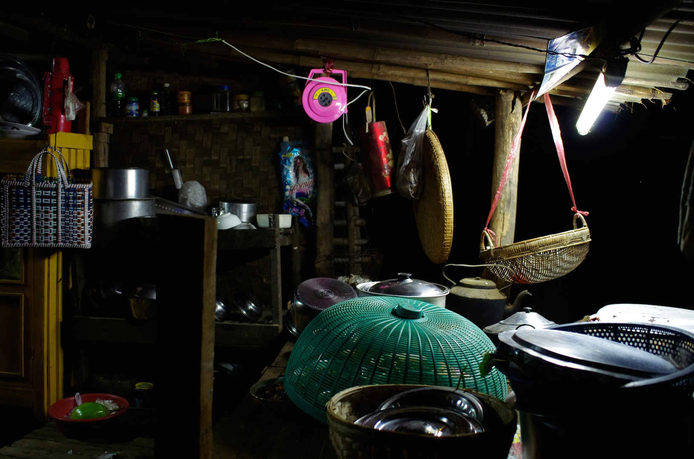
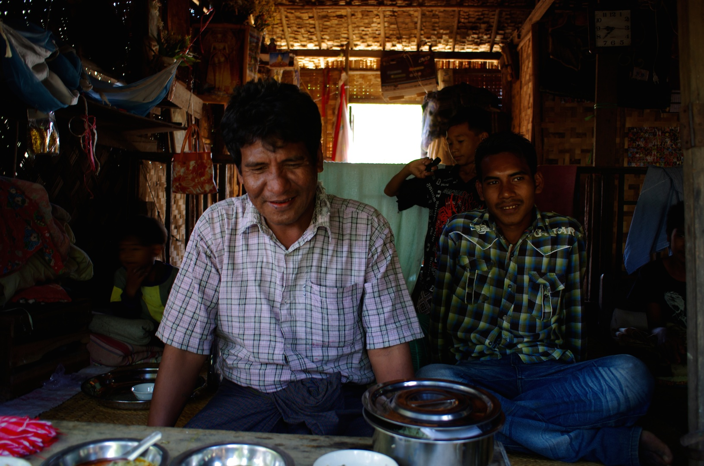
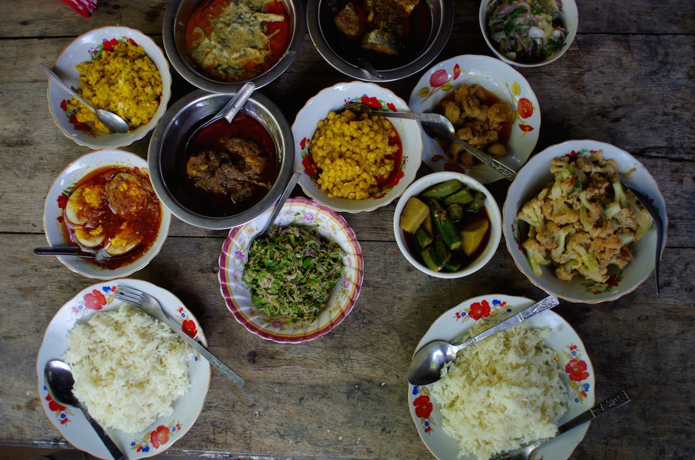
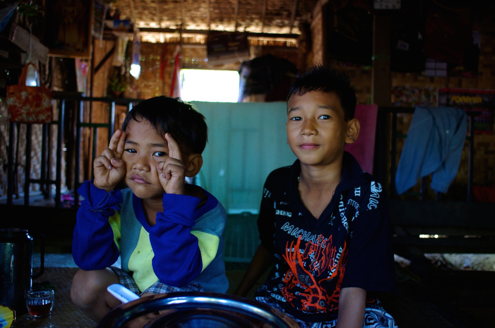
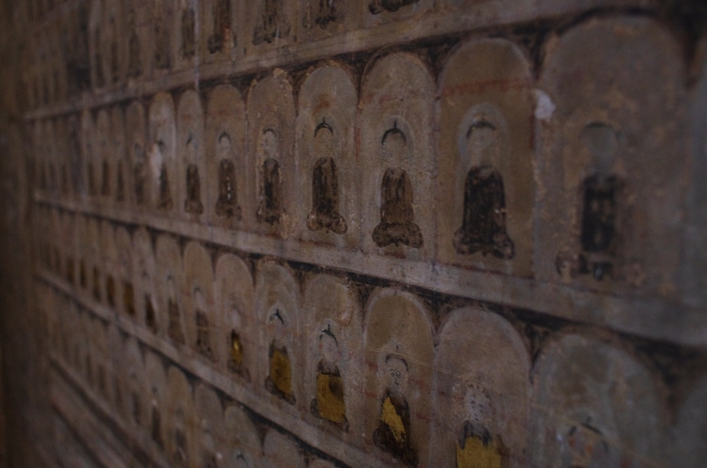
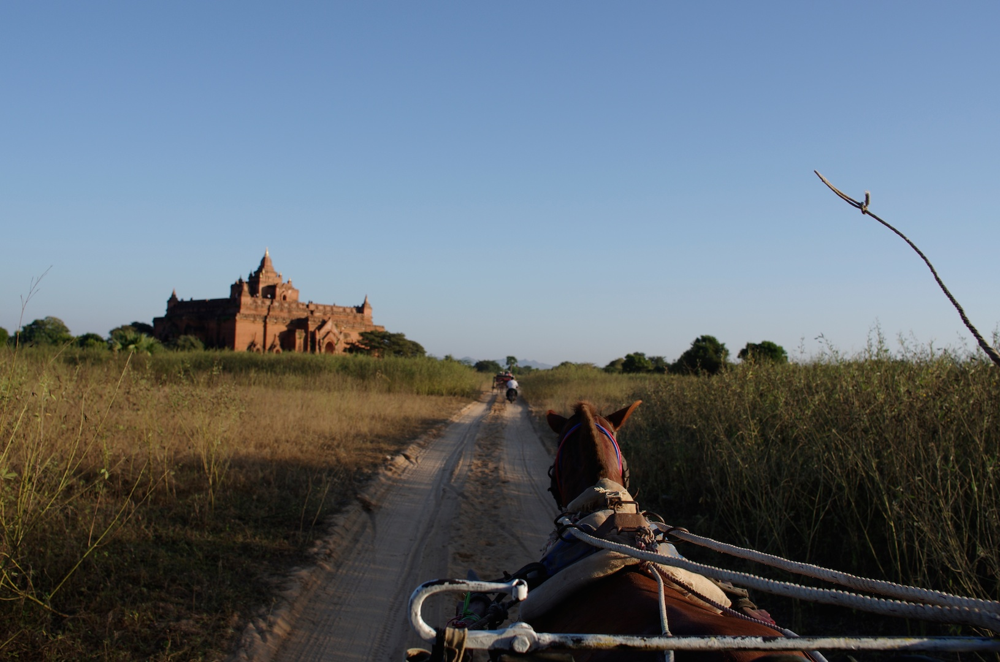
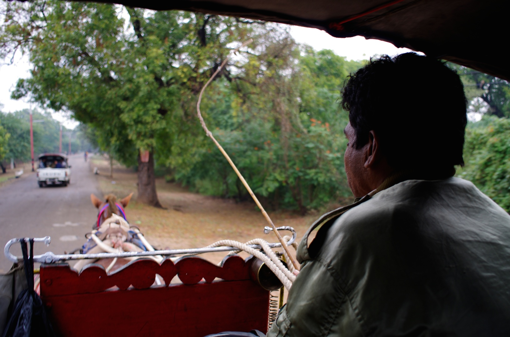
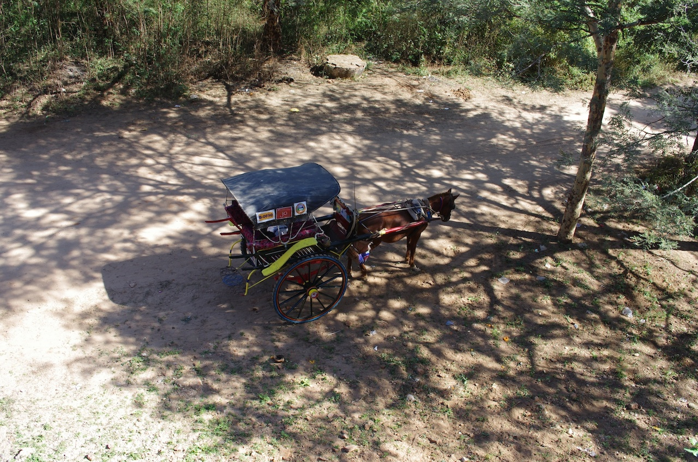
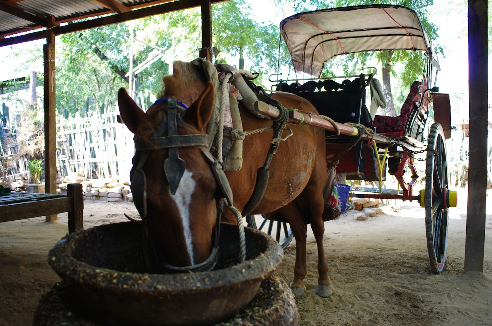